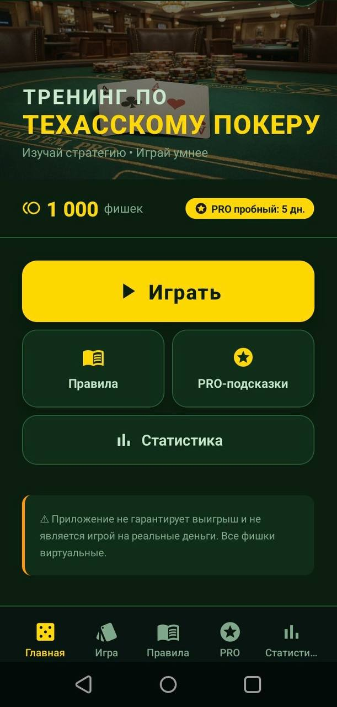
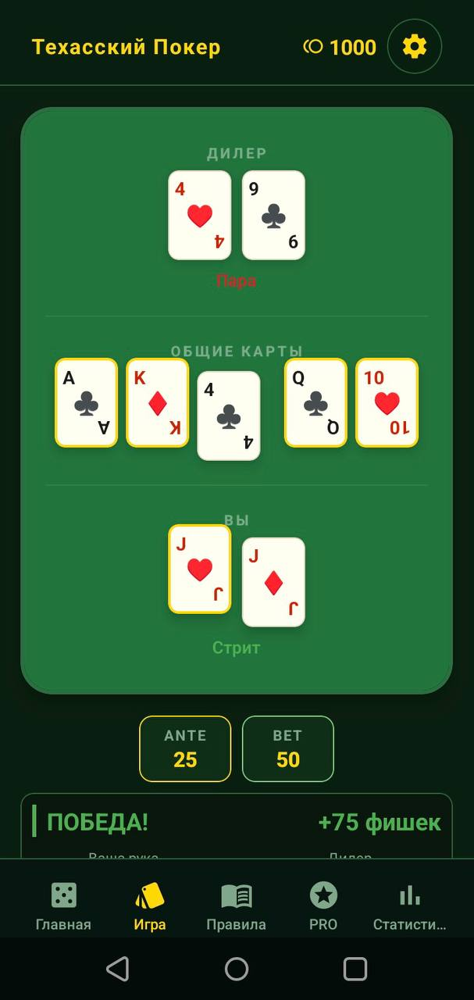
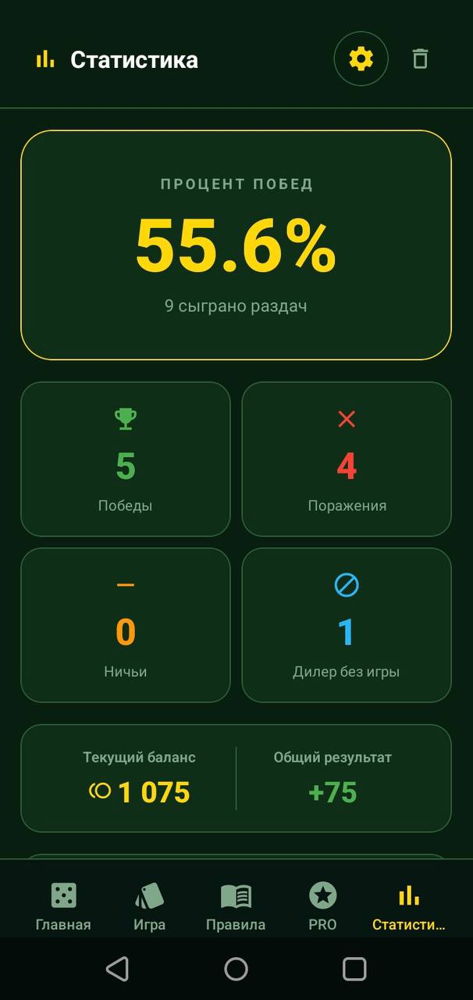

Тренировка решений
Практикуйте выбор действий в разных покерных ситуациях без финансового риска.
21+ • Только обучение • Виртуальные фишки
Texas Poker Trainer — образовательный тренажёр карточных решений 21+ в формате Telegram Mini App. Практикуйтесь против виртуального дилера только с виртуальными фишками, без игры на реальные деньги, денежных призов, выводов средств и обещанных результатов.
Виртуальный банк
+EV подсказкиЧто это
Texas Poker Trainer — это образовательный тренажёр карточных решений 21+ в формате игры против виртуального дилера. Вы принимаете решения по раздаче, сравниваете варианты действий и тренируете понимание ситуаций только с виртуальными фишками. Приложение не предлагает игру на реальные деньги, денежные призы, выводы средств или гарантированные результаты.
Возможности
Простой набор инструментов для регулярной практики и спокойного обучения.
Практикуйте выбор действий в разных покерных ситуациях без финансового риска.
Фокус на понимании логики раздач, диапазонов и последовательности действий.
Все фишки в приложении виртуальные и используются только для симуляции и обучения.
Тренируйтесь в стиле казино-тренажёра без игры с реальными игроками, реальных ставок, денежных призов, выводов средств или гарантированных результатов.
Telegram Stars PRO
PRO — это опциональный платный цифровой доступ внутри Telegram, который покупается через Telegram Stars. Текущая длительность PRO — 30 дней, текущая цена в Telegram Mini App — 750 Telegram Stars. PRO включает образовательные подсказки, усиленный анализ решений, шансы сильной руки и ручной «Разбор ситуации» для учебного анализа. Рекомендации PRO являются статистическими и образовательными, а не предсказаниями и не гарантиями.
Пример подсказки
«Сравните риск, силу руки и статистический контекст перед тем, как продолжить раздачу».
Важно
Texas Poker Trainer является образовательным тренажёром для пользователей 21+. Приложение не предлагает игру на реальные деньги, не принимает реальные ставки, не выплачивает денежные призы и не позволяет выводить средства. Все фишки, балансы и игровые значения — виртуальные и используются исключительно для учебной симуляции. Приложение и функции PRO не гарантируют результаты.
Ручной анализ
Ручной «Разбор ситуации» предназначен только для образовательного анализа карточного решения. Не используйте Texas Poker Trainer во время реальной игры там, где правила заведения, организатора, стола или платформы запрещают вспомогательные инструменты.
Безопасность
Этот сайт создан только для информации о Texas Poker Trainer и перехода на официальную страницу приложения.
Скриншоты
Реальные экраны Texas Poker Trainer для знакомства с тренажёром перед установкой.



Контакты
Разработчик: Kosha Apps
Email: egomoncuk92@gmail.com
Поддержка в Telegram-боте: /support
Поддержка по оплате: /paysupport